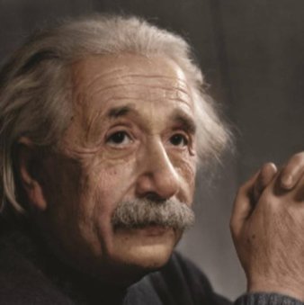
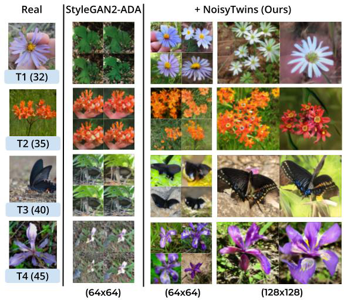
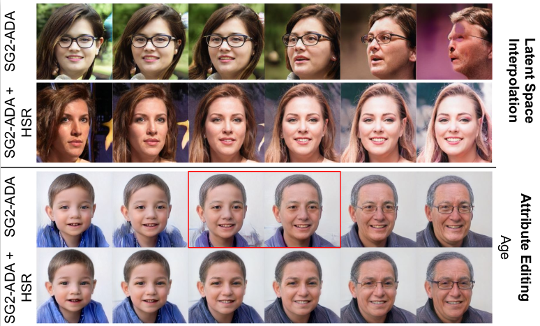
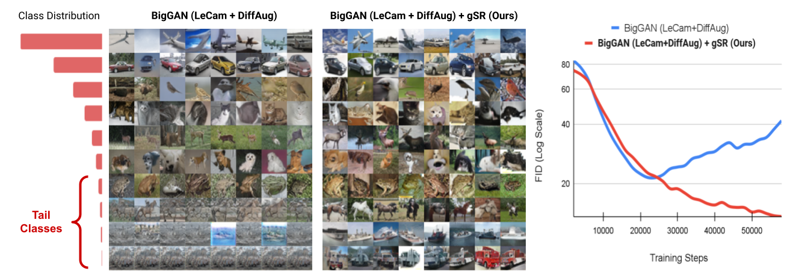
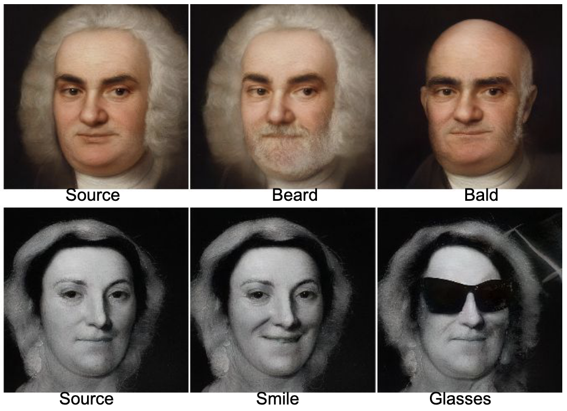
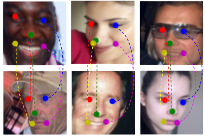
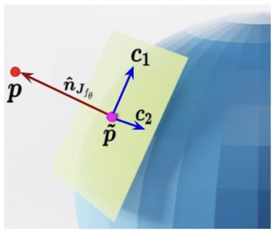
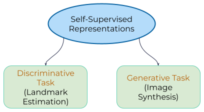

Publications
Refer to my Google Scholar page for an up-to-date list.
2024

PreciseControl: Enhancing Text-to-Image Diffusion Models with Fine-Grained Attribute Control
European Conference on Computer Vision, ECCV 2024
2023

NoisyTwins: Class-Consistent and Diverse Image Generation through StyleGANs
A self-supervised regularization scheme for StyleGANs that alleviates mode collapse and enables consistent, fine-grained conditional generation.
Conference on Computer Vision and Pattern Recognition, CVPR 2023
2022

Hierarchical Semantic Regularization of Latent Spaces in StyleGANs
Hierarchical regularization of GAN features that enhances smoothness in the latent space.
European Conference on Computer Vision, ECCV 2022

Improving GANs for Long-Tailed Data through Group Spectral Regularization
Group spectral regularization for alleviating mode collapse in GANs, particularly for long-tailed data.
European Conference on Computer Vision, ECCV 2022

Everything is There in Latent Space: Attribute Editing and Attribute Style Manipulation by StyleGAN Latent Space Exploration
Technique to find high-quality GAN edit directions using very few images.
ACM International Conference on Multimedia, ACM MM 2022

LEAD: Self-Supervised Landmark Estimation by Aligning Distributions of Feature Similarity
Reported correspondence tracking capability in BYOL and used it for few-shot landmark estimation.
Winter Conference on Applications of Computer Vision, WACV 2022
2021

Deep Implicit Surface Point Prediction Networks
3D shape representation for both open and closed shapes; also enables fast surface normal computation.
International Conference on Computer Vision, ICCV 2021
Masters Thesis

Landmark Estimation and Image Synthesis Guidance using Self-Supervised Networks
Discovered properties of neural networks trained on large data using self-supervised learning, and used them to improve few-shot landmark estimation and naturalness of generated images in StyleGANs.
M.Tech. (Research) Thesis, Indian Institute of Science, March 2022